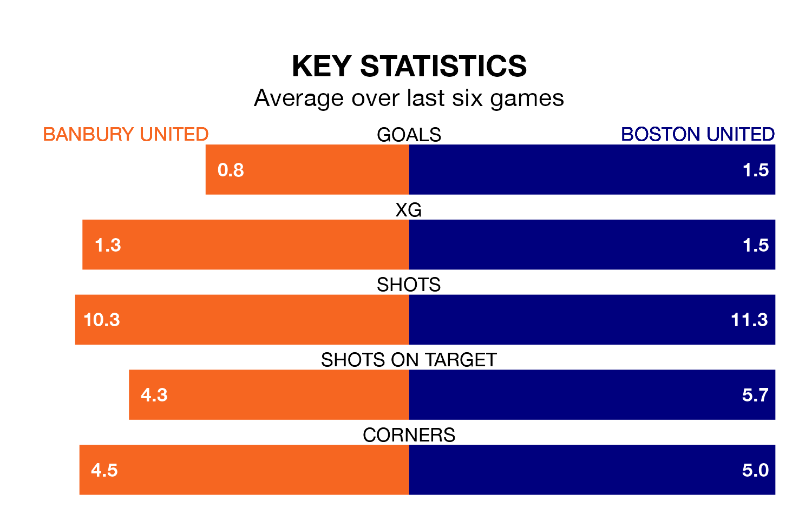

Boston United are strong favourites to take all three points despite Banbury United's home advantage in Tuesday's late match at the Banbury Plant Hire Community Stadium.
*Betting Company* are offering odds of 1.78 on Boston sealing the win, with the visitors sitting 10th in the National League North table.
Banbury, who are 22nd in the league and 30 points behind the Pilgrims, are priced at 3.8 to win. A draw is set at 3.6.
Banbury are in terrible form in the National League North, with no wins and a draw from their last six games.
With four wins and two losses over that period, Boston's form is much better – they have taken 12 points from 18, compared to Banbury United's one.
With 38 goals in 43 games so far this season, the home team are the league's third-lowest scorers with 0.9 goals per game. And they are conceding more than average, letting in 79 goals at a rate of 1.8 per game.
Boston United, meanwhile, are above average scorers, with 1.5 goals per game, compared to a league average of 1.3. They have conceded 1.1 goals per game.
In the last three years, Banbury and Boston have played each other on three occasions. Banbury won two of them and they drew once.
Their last meeting was on October 24, when Banbury won 2-1 away.
Banbury's last match was on Thursday, a 5-2 loss against Spennymoor Town.
Boston lost 2-1 against Brackley Town last time out, on April 6.
Updated: 10:01 (UTC), 12/04/24